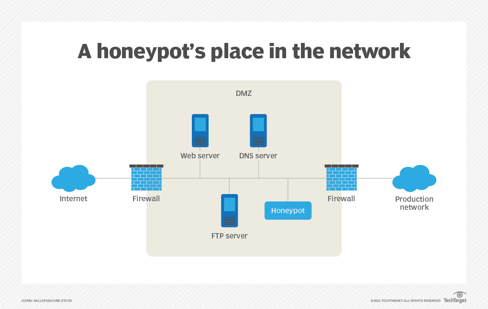

Definición de una Honeynet
Una Honeynet es una red configurada con vulnerabilidades intencionales alojadas en un servidor señuelo para atraer a los piratas informáticos. El objetivo principal es probar la seguridad de la red invitando a los ataques. Este enfoque ayuda a los expertos en seguridad a estudiar las actividades y los métodos de un atacante real para mejorar la seguridad de la red.
¿Cuál es la diferencia entre un honeypot y una honeynet?
Una honeynet contiene uno o más honeypots, que son sistemas informáticos en Internet. Están configurados expresamente para atraer y atrapar a los intrusos que intentan penetrar en los sistemas informáticos de otras personas. Aunque el objetivo principal de una honeynet es recopilar información sobre los métodos y motivos de los atacantes, la red señuelo puede beneficiar a su operador de otras maneras, como desviar a los atacantes de la red real y sus recursos.
Además de los honeypots, una red trampa suele albergar aplicaciones y servicios reales para que parezca una red de producción real y un objetivo que valga la pena. Sin embargo, debido a que la red trampa en realidad no sirve a ningún usuario autorizado, cualquier intento de contactar la red se considera un intento ilícito de violar su seguridad. Como tal, cualquier actividad de salida es probablemente una prueba de que un sistema se ha visto comprometido
Por esta razón, la información sospechosa es mucho más evidente de lo que sería en una red real, donde tendría que ser rastreada en medio de todo el tráfico y los datos legítimos de la red. Las aplicaciones dentro de una red trampa suelen tener nombres familiares como finanzas o recursos humanos para que resulten atractivas para un atacante.
Una red trampa virtual es aquella que, aunque parece ser una red física, es una imagen virtual de una red que reside en un solo servidor. Como no es un sistema de red, los analistas de seguridad informática no tienen que perder el tiempo examinando a los usuarios legítimos que se encuentran en las redes del mundo real.
Como una red trampa no puede detectar ataques en sistemas legítimos, siempre existe el riesgo de que un atacante se mueva lateralmente de la red trampa a un segmento de red de producción para penetrar en la red real. Para mitigar el riesgo, es mejor aislar la red trampa y monitorearla de manera proactiva.

¿Qué es una Honeywall?
Se utiliza un honeywall para monitorear el tráfico de la red y desviar a los actores maliciosos a las instancias del honeypot. En un escenario de honeywall, los expertos en seguridad a menudo inyectan más vulnerabilidades en una red trampa para facilitar que los atacantes accedan a la trampa.
Como cualquier punto de la red puede ser un punto de entrada, es importante monitorear el tráfico en tiempo real y desviar a los atacantes de la red real.
¿Qué es el Proyecto Honeynet?
Honeynet Project es una organización de investigación internacional sin fines de lucro dedicada a la seguridad informática y el intercambio de información. Como tal, The Honeynet Project promueve activamente el despliegue de redes trampa.
La organización también está comprometida con el desarrollo de herramientas de seguridad de código abierto , el estudio de los últimos métodos de piratería y la investigación de los últimos ataques cibernéticos.